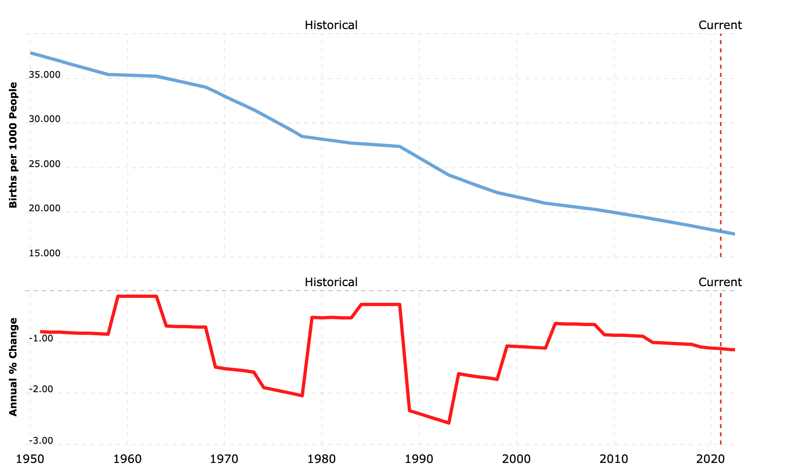
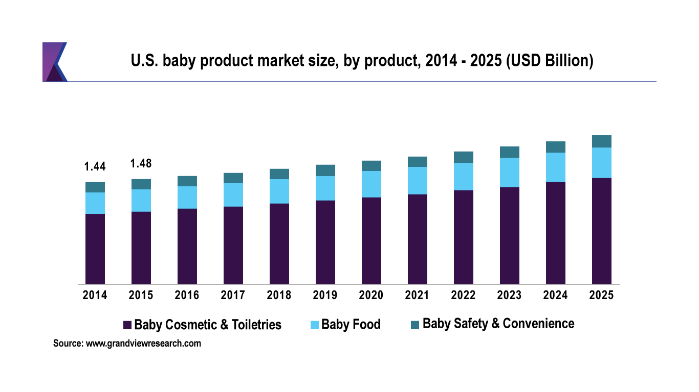

Market Research and Analytics
Global Market: Overview
The Baby Safety Gate are safety devices installed in houses with toddlers and/or pets intended to prevent entry from certain high-risk places like stairs, outdoor spaces, or even certain rooms. According to Knowledge Sourcing Intelligence LLP (2020), “the market was valued at US$783.014 million in 2019”. Birth rate is currently at a steady decline globally as seen as in Figure 3 however that has not hindered the growing demand for secure and safer home environments as consumers become more aware of growing safety risks to their children which is having an adverse relationship in the demand for more baby gates.

Figure 1: Global birth rate trend by United Nations, 2019
Growing middle-class populations and urbanisation especially in developing areas is also a major factor boosting the demand in numerous premium baby care products (Knowledge Sourcing Intelligence LLP 2020). In Figure 4 which is reported in the US, it is evident that while ‘Baby Safety and Convenience’ takes up the lowest percentile of market share, it is projected to keep rising as the years progress. Where does this leave ‘Baby Boom Gate’ as a market competitor?

Figure 2: US Baby Product market share by Grand View Research, 2019
Global Baby Gates Market: Segmentation
According to Fact.MR (2021) the global baby gates market can be segmented based on product type, which are:
- Hardware-Mounted Baby Gates
- Pressure-Mounted Baby Gates
- Freestanding Baby Gates
Hardware mounted gates are the most popular. Typically, these are made with metal hardware which provides better safety since they are affixed to your wall. Since Baby Boom Gate is designed to work with a hardware mounted gate this suits the market need to supply some form of product accessory to each hardware gate as it is versatile in the use of it.
Another popular venture in this currently established market, according to Knowledge Sourcing Intelligence LLP (2020) is the R&D that is driving the market growth. Whilst this does invite more competitors because a lot of companies are launching new products with the aim to capture more market share, Baby Boom Gate has R&D appeal which other companies are currently not boasting. The most recent innovation baby gate wall protector and magnetic cabinet lock from China in June 2019, which leaves Baby Boom Gate in a more futuristic newer market of child safety products.
Market Appeal: Baby Boom Gate
There have been plenty of DIY Arduino-based projects in customising gates, and some for baby safety gates, but none have opened the idea of sensor based, self-closing and alert technologies. Even the major baby gate companies such as Cardinal Gates Summer Infant Products, Dorel Juvenile Group (Safety 1st) and Tee-Zed Products (Dream Baby), are only as far as having self-locking gates.
Baby Boom Gate is the modern touch on this market that the baby safety product needs. It makes leaving the gate open for parents convenient, but also the provides the security of knowing the toddler will not wander only to meet some potentially fatal trip disaster. Making baby gates essentially safer and more convenient in its use.